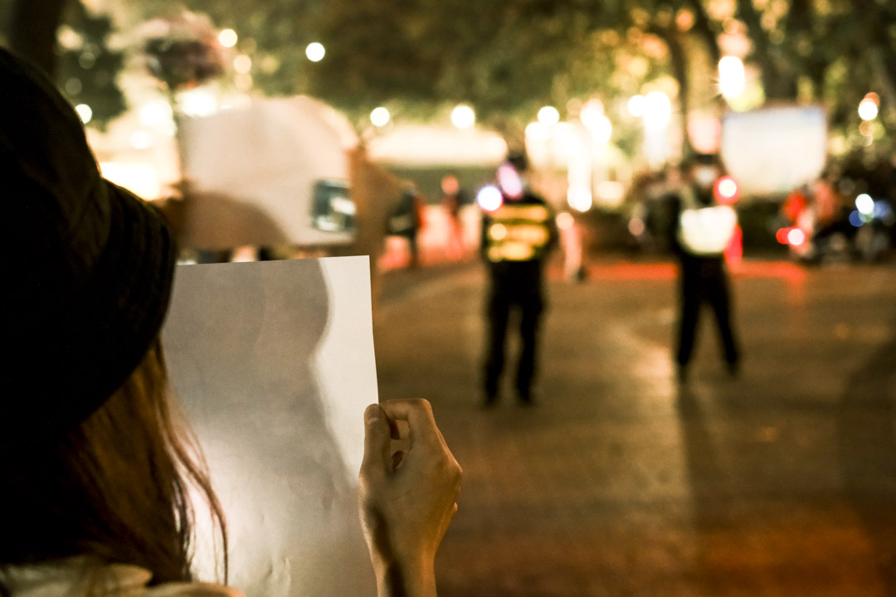

【現場】從廣州人民橋到海珠廣場：提前部署的警力、對罵聲與被圍困的示威者
Table of Contents
「站出來的時候，變革就已經在發生了。」
Figure 1: 2022年11月27日晚上，廣州越秀區有市民聚集，手持白紙表達對烏魯木齊火災的哀悼和對防疫防控措施的抗議。攝影：伯謀
端傳媒中國組 特約撰稿人 Lesley Fung 發自新加坡
刊登於 2022-12-02
「今天晚上不要在這裏了，不讓在這裏集結。」
「可是我們就兩三個人誒，我們就是過來玩的。」
「不要跟我說這些，現在這裏臨時管控。」
「管控？有文件嗎？」
「我們管控還需要文件嗎？為什麼要給你看文件啊？下文件，那我現在口頭跟你說了，行不行？」
11月27日晚，寶榮與廣州海珠廣場中布控警察爭執時，錄下了這段讓他哭笑不得的片段。
當晚，廣州與北京、上海、成都等多個城市，同時發生對防疫封控的群體抗議行動，以年輕人為主的市民們走上城市的街頭，喊口號，唱歌，舉起白紙與悼念烏魯木齊慘劇的鮮花，這不僅是他們很多人生命歷程中的第一次街頭經歷，也是中國大陸高壓政治環境中，數十年少有的抗爭場景。
參與其中的人，或許訴求與站出來的原因不盡相同，但抗議愈發荒謬甚至不斷造出人禍的防疫封控政策，是「最大公約數」。11月30日，含廣州在內，多個城市放鬆防控，分管防疫的中國國務院副總理孫春蘭，也首次在座談會中提及防疫面臨「新形勢新任務」。
這似乎是抗議帶來的些許迴音，但警方的盤查與騷擾也接踵而至，寶榮的朋友就曾被警方以防疫調查為名，在清晨重重敲響房門。而與此同時，那些夜晚的共同經歷，也在每個參與者心裏種下了不同的種子。

Figure 2: 2022年11月27日晚上，廣州越秀區有市民聚集，手持白紙表達對烏魯木齊火災的哀悼和對防疫防控措施的抗議。
周旋
廣州的示威從一開始，就註定伴隨着與警方的斡旋與纏鬥。
11月27日下午，寶榮看到社交媒體中流傳着一張海報，約定晚8時在廣州人民橋底共同紀念因過度防疫而死去的同胞。前一日，上海烏魯木齊中路的抗議 與南京傳媒學院等高校學生的白紙抗議，在中國大陸社交媒體的重重審查中仍被不斷傳播。27日當天，除廣州外，北京、成都等其他城市也發出相應號召。「要跟 大家站在一起」的念頭下，寶榮沒有多想，就叫了朋友一同前往。
然而，當他抵達人民橋底時，已有大量警力部署在周邊。寶榮與朋友只好一圈圈地在附近遊蕩。
八點半左右，人民橋底部署的警察越來越多，他們甚至開始隨機翻路人的包，幾乎每20米就有兩位警察，安靜的街道上沒有任何示威的痕跡，只有一些如寶榮一樣不願離開、四處走動的「路人」，與越來越多的警察和警車。
「當時還在封控，人不多，但有一些行人，從他們尋找的眼神裏，能看得出來其實是同路人。」林樂回憶，他也是當時在現場走動的人之一。不久，一些路過的朋友開始小聲提醒：你們快走，這邊要抓人了。於是寶榮、林樂等人便動身到海珠廣場，去參與十點半的活動。
原定地點是海珠廣場標誌性的雕像前，然而那裏同樣布滿了警察。據寶榮回憶，當時廣場上有近五十位警察，他與朋友站在雕像下聊天，試圖等待更多人加入。警察留意到他們的停留，便不斷要求他們離開，於是就有了本文開頭的對話。
緊接着，寶榮手機上開始不斷收到 Airdrop 傳來的一些圖片，有的是傳播地點時間信息，有的是提醒注意安全。約十點多，兩三位年輕人走到寶榮身邊低聲問：「你們是嗎？」
「是。」
「可以跟我走，在小花園裏。」

Figure 3: 2022年11月27日晚上，廣州越秀區有市民聚集，手持白紙表達對烏魯木齊火災的哀悼和對防疫防控措施的抗議。
「不要圍觀要加入！」
約10點半，悼念活動在海珠廣場的小公園深處開始。有人打開藍牙音箱，在現場放起了音樂。第一首是葉倩文的《秋來秋去》。
「秋來也秋去，秋風教人掉眼淚，何時才跟你可重聚。」寶榮說，念着歌詞，不知為何，覺得竟也很符合當時的心境。
人們隨着音樂聲逐漸靠近彼此，有人互相打招呼說好久不見，有人派發白紙，有人只是安靜地站在原地哼唱。歌聲也吸引了不遠處的警察，一首歌還未放完， 警察們已逐漸逼近。不知是誰喊了一聲：「大家都站在一起吧！」最早到場的幾十人便伴着音樂，手舉白紙，沉默地站在一起，面向警察。
「其實看到警察越逼越近我很害怕，」寶榮說，「我甚至下意識將手上的A4紙團了起來，但看到身邊人都紛紛舉起手裏的白紙，我便也展開，加入了他們。」
幾首歌放完，示威者對面的警察開始結成人牆，並拉起警戒線，將人群分割成線內的示威者與線外的圍觀者，拉線的同時不斷驅趕周圍人群，試圖引導人群至靠近馬路的部分。這時，有人忽然喊了一聲：「不要圍觀要加入！」
「不要圍觀要加入！」其他示威者也跟着喊起來，寶榮說，那是那晚喊得最多、時間最久的口號。期間，一些圍觀者漸漸走入警戒線內，加入示威的核心區 域。領頭口號的聲音也開始多元起來：「逝者安息，人民萬歲！」「不要核酸要吃飯，不要封控要自由！」，還有粵語的聲音：「廣州人，企起身！」
除口號外，示威者們與北京、上海等地一樣合唱起《Do you hear the people sing》、《國際歌》等，而Beyond樂隊的《海闊天空》、《光輝歲月》更合唱了不止一遍，寶榮還聽到身旁有人用手機播放了謝安琪的《家明》。
唱累了、喊累了，一些示威者開始嘗試與圍堵在面前的警察溝通。有人用普通話問：「你們是誰的父親，又是誰的兒子？你們最開始考入警校，就是為了站在 這裏封住你們所服務的人民嗎？」有人用粵語苦口婆心：「三年啦，過夠啦，飯都冇的食，你哋都系人，都知而家工好難搵，你哋咁樣，翻屋企瞓唔瞓得着啊？」 （注：三年了，過夠了，飯都沒得吃，你們也是人，也知道現在工作不好做啊，你們這樣，回家睡不睡得着啊？）
沒有人給出回應。
Figure 4: 2022年11月27日晚上，廣州越秀區有市民聚集，手持白紙表達對烏魯木齊火災的哀悼和對防疫防控措施的抗議。
核心示威者之外：對罵聲、便衣與污名
「廢青返屋企！（注：廢青回家！）」圍觀者中，有人喊到。
海珠廣場上的核心示威者喊口號期間，外面也聚集了越來越多的圍觀群衆，有人拍照，有人發布抖音、快手等視頻網站直播，有人在觀望，有人在猶豫，有人認為示威者在「搞搞震（搗亂）」，喊着「返屋企！返屋企！」，有人回擊：「收皮！收皮！」
在廣場的另一個角落，幾位示威者被圍困在警戒線和圍觀人群的包圍裏，其中一位女性與圍觀的大叔對罵起來，大叔指示威者是「廣州曱甴」，外地人收了錢搞亂廣州，女性則回問：「你可以代表廣州人嗎？」
一直在警戒線外各處拍照記錄的伯謀回憶，雖然白紙是代表對審查的抗議，但當時很多圍觀的尤其年長者，對此一無所知。抗議結束後，一些民族主義公衆號 甚至造謠污名稱，白紙是為了方便外媒記者重新合成照片，換上需要的口號。更有人在白紙上後期加入繁體字標語的照片，在社群網絡裏傳播，稱此為香港行動者煽 動的證據。
「可能與廣東文化也有關吧，廣東人普遍是務實的、遠離政治的、生活安定的、政治冷感的，」46歲的丹尼說，他是11月27日晚廣州示威者中極少數的 中年人，在他對身邊人的觀察裏，很多上了年紀的圍觀者並不知道這場抗議的訴求是什麼，只是通過意識形態過去對他們的灌輸，下意識想到「顏色革命、境外勢 力」，再加上疫情期間海珠區城中村廣州人與湖北人的矛盾，便會認為「外地人代表不了本地訴求」。
「在我的觀察裏，示威者中其實很多廣東人，很多講粵語的，」林樂回憶，「但領頭喊口號的女生多是普通話，聽不出廣東口音，因此圍觀者可能會產生『外地人在搞亂廣州』」的認知。」
同樣身在覈心示威者人群中的阿偉，也聽到了「返屋企」等聲音，身邊一些廣東人還回嗆：「要返自己返啦！」由於有一定距離，他無法分辨「返屋企」等噓聲的來源，「我不確定是故意搗亂的便衣，還是外面的圍觀者。」
阿偉是從周圍的人群漸漸走入示威核心區的，他此前在警戒線外發現現場除警察外，還有很多易於辨認的便衣警察，他們往往都是一些精壯的中年男人，黑色衣服和鞋子，戴着N95口罩，會拿着手機靠近示威者的臉進行拍攝。
「但如果是故意搗亂的，廣州疫情期間本地外地矛盾，的確是一個容易被挑起矛頭的焦點。」阿偉補充。
Figure 5: 2022年11月27日晚上，廣州越秀區有市民聚集，手持白紙表達對烏魯木齊火災的哀悼和對防疫防控措施的抗議。
「一起走！」
晚上11時30分至12時之間，警察組成人牆將核心圈內的人圍了起來了，看着警察漸漸逼近和圍困的行動，站在外圈的聲援者開始喊：「放人！」
阿偉跟着人流漸漸走入核心示威者的地帶時，並沒有留意身邊情況，查看完信息一抬頭，才發現自己已被困在了警察的包圍圈中。此前在國外讀書時，阿偉時 不時會去圍觀當地的遊行、罷工等，遇到感興趣的活動，也會跟着走一段，那時只覺得一切稀鬆平常。11月27日是他第一次在中國大陸參加聲援，第一次切身感 受到兩種情景的壓抑，第一次覺得自己距離即將被鎮壓的運動，如此近。
當晚，核心區域的示威者被圍困了近1小時，期間有人想離開，但走不出去便只好折返、繞圈，還有人想要衝破警察的阻攔人牆，未免引發衝突，被其他示威者拉了回來。用丹尼的話說，警方和示威者兩邊，當晚都保持着剋制。
直到一位年輕男性向警方表示，自己想回家、不鬧事，其他人便也圍了上來。警方派出一位自稱廣州越秀區分局的領導與示威者談判，最初要求示威者3至5人一組走出，由警方送回住所，並登記身份證。在場示威者表示不滿，認為只要警方開路，大家就可以很快離開。
據阿偉回憶，警方與示威者的談判來回進行了幾次，每次否決都因示威者「如何保證安全」的問題無法得到滿意回答，大家擔心打散分組後可能有人會被要求做筆錄，甚至遭遇暴力對待。忽然，人群中傳來一聲「一起走！」，其他人便也跟着大聲喊起來。
阿偉說，那一刻忽然很想哭，也想起2019年香港反修例運動衝入立法會時，大家強調一起走的場景。雖然原因不盡相同，但那種團體感是一致的。
1點左右，雙方達成「白紙不再舉着、離開後不再聚集」的協定，阿偉、寶榮等在海珠廣場被圍困的示威者安全離開。離開時，寶榮給此前在人民橋偶遇的陌生朋友發信息報平安，並詢問他們在哪裏、是否安全，很可惜，他們因落單被帶入警察局做筆錄。
寶榮問，需要幫忙嗎？
朋友說，沒事啦，就是頭髮被揪掉很多。
Figure 6: 2022年11月27日晚上，廣州越秀區有市民聚集，手持白紙表達對烏魯木齊火災的哀悼和對防疫防控措施的抗議。
種子
「有開酒吧的大哥說，以後去他酒吧隨便喝，但我不記得名字了……還有一個女孩生日，我們很多人給她唱生日歌。」距離11月27日已過去3日，寶榮回憶起那時的心境和偶遇，仍然有鮮活的溫馨感。
這幾天，寶榮時不時還會拿手機小聲公放着「禁曲」隨處走動，希望通過黃耀明、謝安琪等歌手的聲音，讓同伴得以辨認彼此，他很懷念在現場產生的那份聯結感。
同樣懷念的還有林樂，他說，其實內心裏知道去到現場的人，訴求未必是相同的，有的人是宣泄，有的人是維權，有的則是想到更深的東西，但那一晚大家能真實地聚在一起，好像平日裏累積的孤獨感忽然得到了釋放，「原來有同樣想法的人可以有這麼多，原來我們可以這樣看見彼此。」
「很多人反覆問我，是不是人頭200快，白紙什麼意思，具體發生了什麼，」伯謀將拍攝的部分照片發布在社交媒體後，收到了很多詢問，這讓他覺得自己 有義務將更多真相記錄下來，「無論相機還是手機，其實每個人都有義務去記錄、去傳遞、去發聲，否則我們就只能接收那些被篡改的信息。」
抗議過後，不少參與者遭遇了警察的騷擾。據寶榮了解，此前被帶去做筆錄的朋友回家後仍要不時被上門的警察以「流調」為由要求「談談」。凌晨，朋友家忽然響起重而急促的敲門聲，「流調不是防疫辦的事嗎？」朋友如此拒絕後，上門的警察不多久便離開了。
「我們這一代是對89有一些印象的，」丹尼說到，「會對這個體制的冷漠有一個認知，所以看到小朋友們願意出來，覺得很難得。雖然他們未必有公共行動更深的政治意識，但走出來就很難得。」
提及33年前的天安門運動，阿偉認為，兩次大型示威未必有可比性，「89是高度政治化的運動，而這次幾個城市的示威主要還是針對防疫政策，」他覺 得，目前示威停留在沒有非常政治化的狀態未嘗不是件好事，「就如今中國大陸的環境而言，能有這樣的一次行動已經很難得，已經是89後再未有過的了。」
阿偉說，兩三年前在國外時，從來不會有所謂「愛國主義」的心態，對由黨國建立起來的「愛國主義」很排斥，回來後也一直想着如何再離開。但11月27 日那晚過後，「就覺得自己是個中國人」，行動者們似乎在現場共同建構起了新的身份認同。「我們意識到可以為自己的生活站出來的時候，變革就已經在發生了， 不一定要一些很明確的政治口號。」阿偉說。
「每個人心裏的種子都種下了，我相信有一天有機會的話，我們都會抓住的，都會想表達自己的。」林樂說。
文中姓名均為化名。文中人稱代詞「他」均無關性別。

2017年7月，端傳媒啓動了對深度內容付費的會員機制。但本文因關乎重大公共利益，我們特別設置全文免費閱讀，歡迎你轉發、參與討論，也期待你付費支持我們，瀏覽更多深度內容。
本刊載內容版權為端傳媒或相關單位所有，未經端傳媒編輯部授權，請勿轉載或複製，否則即為侵權。